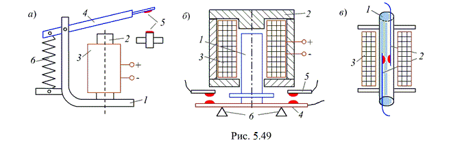

5.6.2.1. Классификация и принципы действия реле
Электромагнитное реле (ЭМР) имеет два или более устойчивых состояний в зависимости от системы управления реле. Основными параметрами электромагнитных реле являются: мощность срабатывания (10-3…103 Вт), коммутируемая мощность (10-1… 10-4 Вт), которая определяется параметрами контактов реле, время срабатывания (1 … 200 мс) и отпускания, размеры и масса, надёжность.
По принципу действия различают электромагнитные реле нейтральные постоянного и переменного тока и поляризованные.
По характеру движения якоря электромагнитные реле делятся на три группы: поворотные (рис. 5.49а), с втяжным якорем (рис. 5.49б) и язычкового типа (рис. 5.49в).

На рис. 5.49а приведена схема конструкции поворотного ЭМР постоянного тока. Реле состоит из магнитопровода 1, сердечника 2, катушки 3, якоря 4, контактов 5, пружины 6. Если к катушке подвести управляющий сигнал (электрическое напряжение), то за счёт возникновения электромагнитной силы якорь притянется к сердечнику электромагнита. В результате этого контакты реле замкнутся. Если управляющий сигнал снять, то якорь возвратится в прежнее положение под действием пружины 6, и контакты реле будут разомкнуты.
Принцип действия реле с втяжным якорем (см. рис. 5.49б) так же, как и поворотных реле, основан на притяжении якоря 1 к сердечнику 2 электромагнита, на катушку 3 которого подаётся управляющий сигнал. При этом поднимается контактная перемычка 4, замыкая контакты 5. При снятии управляющего сигнала якорь под действием силы тяжести опускается на упоры 6, размыкая контакты.
В реле язычкового типа, называемого герконом (см. рис. 6.49в), контакты, расположенные на пластинах 2 из ферромагнитного материала - пермалоя помещены внутри герметизированного стеклянного баллона 1, наполненного инертным газом. При подаче управляющего сигнала на катушку 3 этого реле под воздействием магнитного поля пластины 2 замыкаются. Реле способно коммутировать мощность порядка 20 Вт.
Преимущества герконов по сравнению с двумя предыдущими типами реле – по габаритам, быстродействию и надёжности. Недостатком герконовых реле является повышенная чувствительность к внешним магнитным полям. Для уменьшения их влияния геркон помещают в экранирующий корпус из магнитно-мягкого материала.
Обычно для сердечников и магнитопроводов реле используют материалы с большой магнитной проницаемостью, чаще всего электротехническую сталь. Контакты малой мощности изготавливают из серебра, золота, платино-иридиевого и других сплавов. Эти материалы создают малое переходное сопротивление. Для коммутации относительно мощных цепей применяют контакты, изготовленные из вольфрама, а также из сплавов вольфрама с серебром и из меди и графита.